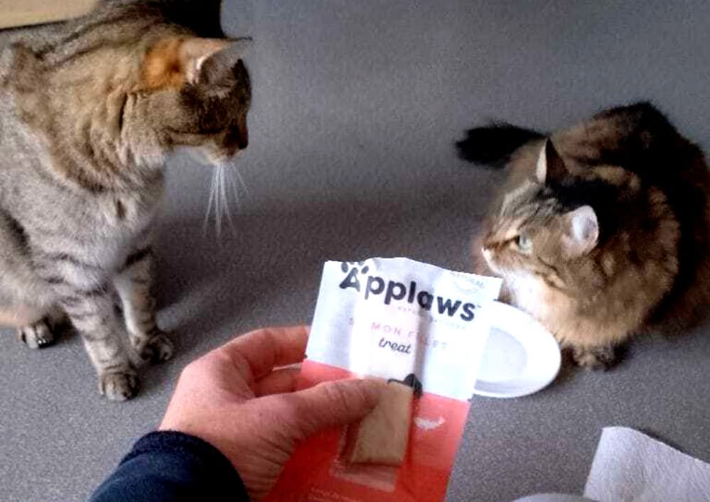
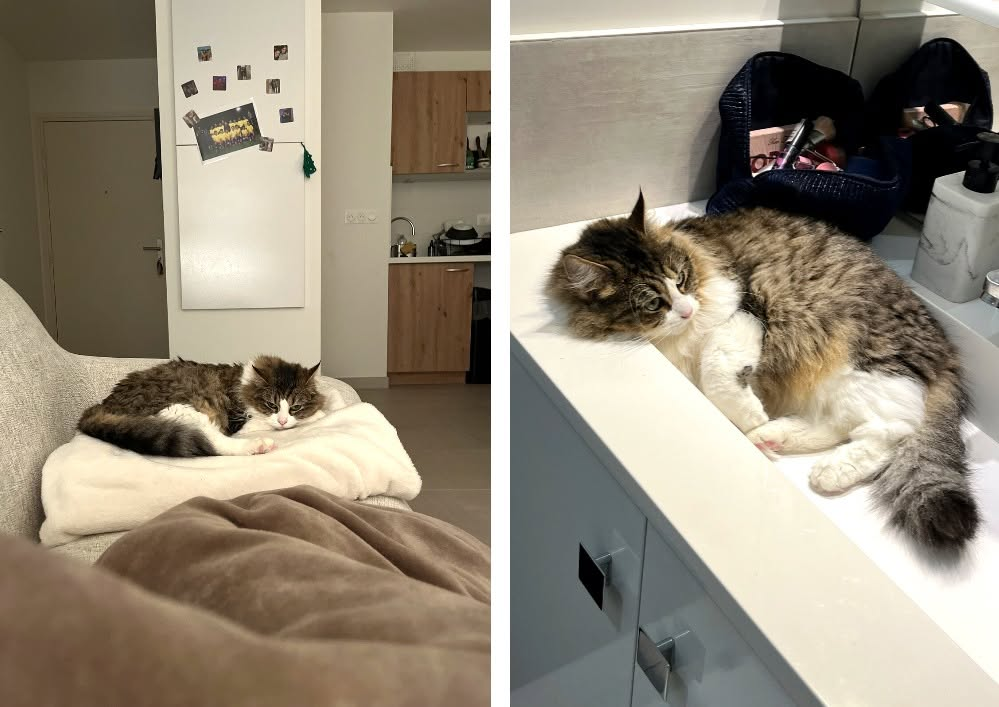

Soutenir 4 Pattes en Détresse
Au-delà de l'impression 3D, un engagement du cœur pour les chats et chiens du Pian-Médoc.
L'association 🐾
Basée au Pian-Médoc, l'association 4 Pattes en Détresse œuvre quotidiennement pour le sauvetage, la prise en charge médicale, la stérilisation et la mise à l'adoption des chats et chiens abandonnés ou en difficulté.
Gérée par des bénévoles passionnés, elle offre une seconde chance à de nombreux animaux grâce à un réseau de familles d'accueil dévouées.
Nos Protegés & Actions
Découvrez quelques-uns des petits pensionnaires pris en charge par l'association.

Prise en charge & Soins
Chaque chat est identifié, vacciné, stérilisé et soigné avant d'être proposé à l'adoption.

Vie en Famille d'Accueil
Les animaux sont sociabilisés dans des foyers chaleureux au Pian-Médoc en attendant leur famille pour la vie.

Soutien Theina3D
Création de matériel, médailles ou accessoires sur-mesure pour aider les animaux à mobilité réduite.
Comment vous pouvez aider ?
Commandez sur la boutique
Chaque création achetée sur notre site contribue directement au soutien financier de l'association.
Devenez Famille d'Accueil
L'association cherche continuellement des familles d'accueil au Pian-Médoc pour héberger des chats ou chiens.
Faire un don direct
Nourriture, litière, couvertures ou dons financiers : chaque geste compte pour les animaux en souffrance.